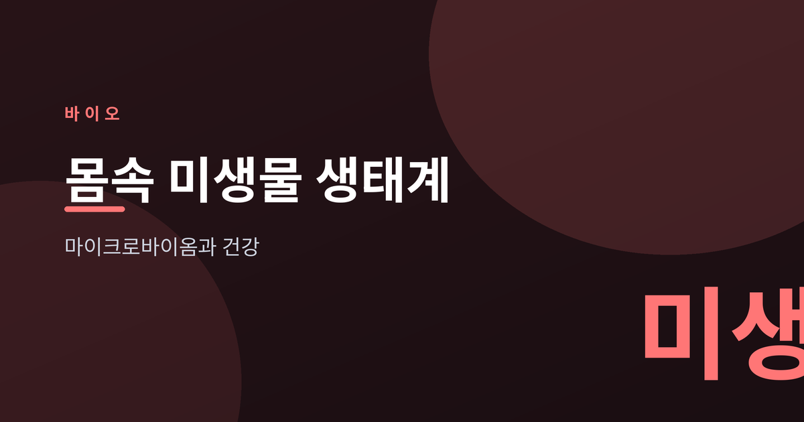
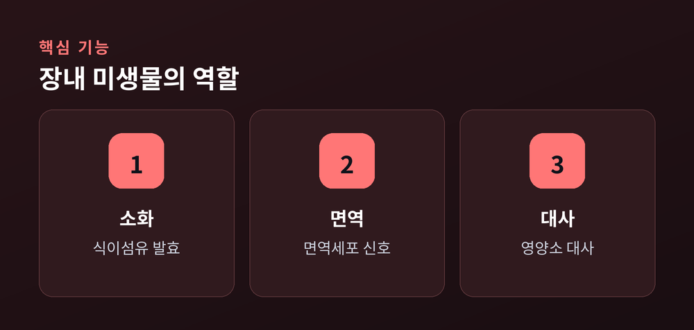
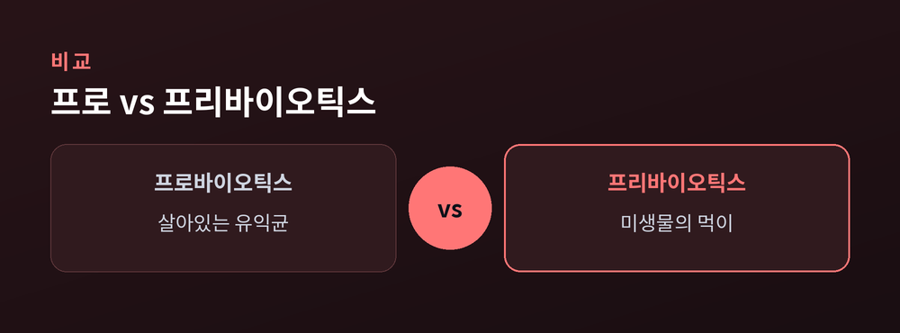
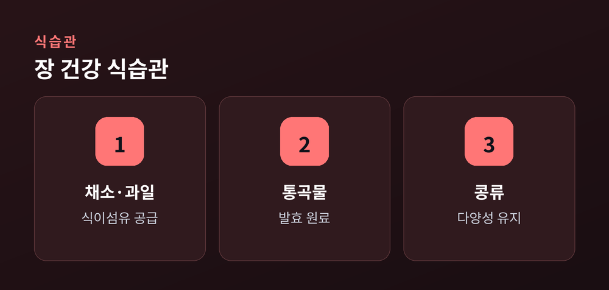

마이크로바이옴과 건강

우리 몸에는 사람의 세포 못지않게 많은 미생물이 함께 살고 있습니다. 특히 대장에는 수천 종에 이르는 세균이 자리 잡고 있으며, 이 미생물 공동체 전체를 마이크로바이옴이라고 부릅니다. 최근 연구는 인체 장내에서 3,000종이 넘는 세균이 확인된다고 보고합니다. 오늘은 이 몸속 생태계가 어떤 일을 하는지, 그리고 식습관과 어떻게 연결되는지 차분히 살펴보겠습니다.
장내 미생물은 소화, 면역, 대사라는 세 축에서 우리 몸과 협력합니다. 우선 사람이 스스로 분해하기 어려운 복합 탄수화물과 식이섬유를 발효시켜 에너지원으로 바꿉니다. 또한 병원균이 자리 잡지 못하도록 경쟁하고, 면역 세포에 신호를 보내 면역계의 발달과 조절을 돕습니다. 일부 비타민 합성에도 관여하는 것으로 알려져 있습니다.

건강한 장은 특정 세균이 독점하지 않고 여러 종이 균형을 이루는 상태로 여겨집니다. 사람의 장에서는 후벽균(퍼미큐티스), 의간균(박테로이데테스) 등 몇몇 문(門)이 전체의 대부분을 차지합니다. 다만 어떤 조합이 '정답'인지는 아직 단정하기 어렵고, 개인마다 구성이 상당히 다릅니다. 그래서 획일적인 기준보다 각자에게 맞는 균형을 이해하는 관점이 필요합니다.
장내 미생물 구성은 사람마다 지문처럼 다르며, 하나의 이상적인 조합이 확정된 것은 아닙니다.
둘은 이름이 비슷하지만 역할이 다릅니다. 프로바이오틱스는 살아 있는 유익균 자체를 뜻하고, 프리바이오틱스는 그 미생물이 먹이로 삼는 성분, 주로 식이섬유를 가리킵니다. 다만 보충제 섭취가 장내 환경에 실제로 어떤 효과를 주는지는 개인차가 크고, 학계에서도 아직 논의가 이어지고 있습니다. 특정 제품이 만병을 해결한다는 식의 주장은 경계할 필요가 있습니다.


연구에서 비교적 일관되게 확인되는 것은 식이섬유의 역할입니다. 미생물은 소화되지 않은 식이섬유를 발효시켜 부티르산 같은 짧은사슬지방산을 만드는데, 이 물질은 장벽 유지와 염증 완화에 관여하는 것으로 보고됩니다. 다만 같은 식이섬유라도 반응은 사람마다 다릅니다. 채소·과일·통곡물·콩류처럼 다양한 식물성 식품을 꾸준히 섭취하는 식습관이 현재로선 가장 무난한 접근으로 이야기됩니다.
장내 미생물 연구는 빠르게 발전하고 있지만, 아직 밝혀지지 않은 부분도 많습니다. 특정 균이나 제품에 과한 기대를 걸기보다, 다양한 식물성 식품 중심의 균형 잡힌 식사를 유지하는 편이 현실적입니다.
이 글은 일반적인 정보 제공을 위한 것이며 의학적 조언이 아닙니다. 건강 상태에 대한 판단은 전문의와 상담하시기 바랍니다.